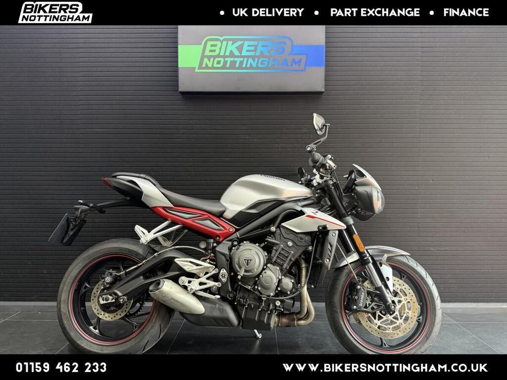

The budget way in
2020–22 Street Triple R
No press quote found for this model yet.

2020 Street Triple R in silver, 4,210 miles, £6,599.
Seller: Bikers Nottingham · (0115) 774 6922
| Price | £6,599 |
|---|---|
| Year | 2020 |
| Miles | 4,210 miles |
| Model | Street Triple R · Silver |
| Location / dealer | Bikers Nottingham |
| Distance from Poole | ≈ 159 miles as the crow flies (straight line from Poole BH15 1AA, estimated from “Nottingham”) |
| On the lists | All bikes |
| Registration | Not stated in the ad, and I didn’t check the photos for this listing |
| Seller type | Trade (ad) |
| Phone (ad) | (0115) 774 6922 |
| AutoTrader model description | R X-ring Euro 4 765cc |
| First registered (ad) | 30/06/2020 |
| Owners | 3 (ad) |
| Service history | Full history (ad) |
| From the ad | “Triumph Street Triple LHR 765 (Factory low model) with 4210 miles with five stamps in the book. The bike will have an oil and filter service. Very nice example that has been fitted with RG rad guard, belly and bar end mirrors. Two keys and all the books are with the bike. Call today or visit us in store Monday to Saturday: Bikers Nottingham Fields Farm Road Long Eaton Nottingham NG10 3FZ Nationwide delivery available…” |
Facts marked (ad) come from the listing. Ask the seller to show you the paperwork.
Ask for stamped or invoiced services, and the date of the last valve check.
Triumph’s technical bulletin TB262 lists the Street Triple R and RS without giving years, so ask the dealer whether it applies to this engine. It is a workshop bulletin, not a safety recall. Also ask for an outstanding-recall check on the frame number. Source: Triumph TB262 ↗
Test both up and down shifts. Owners of the later 2023+ bikes have reported sensor failures. Source: MCN owners’ reviews ↗
Registration: Not stated in the ad, and I didn’t check the photos for this listing
Without a confirmed registration I couldn’t check the DVLA and MOT records. Ask the seller for the registration, then use the GOV.UK MOT history and DVLA vehicle enquiry checks.
| Spec | 2020–22 R |
|---|---|
| Power | 118PS @ 12,000rpm |
| Torque | 77Nm @ 9,400rpm |
| Weight | 168kg dry |
| Seat height | 825mm |
| Front suspension | Showa, adjustable |
| Rear suspension | Showa, adjustable |
| Front brakes | Brembo M4.32 |
| Electronics | Two-way Shift Assist standard |
| Fuel tank | 17.4L |
Sources: Triumph UK – Street Triple 765 spec · Triumph media – 2023 range · Triumph – Moto2 spec · Triumph UK – 765 RX · Triumph media – 2020 RS · MCN – 2020–22 RS review · Motorcycle.com – 2020 RS first ride · Motorcycle.com – 2020 R first look
No press quote found for this model yet.
Seller: Bikers Nottingham · (0115) 774 6922